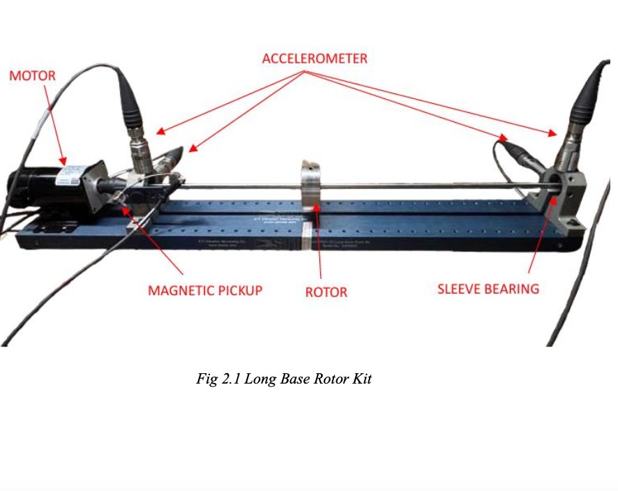
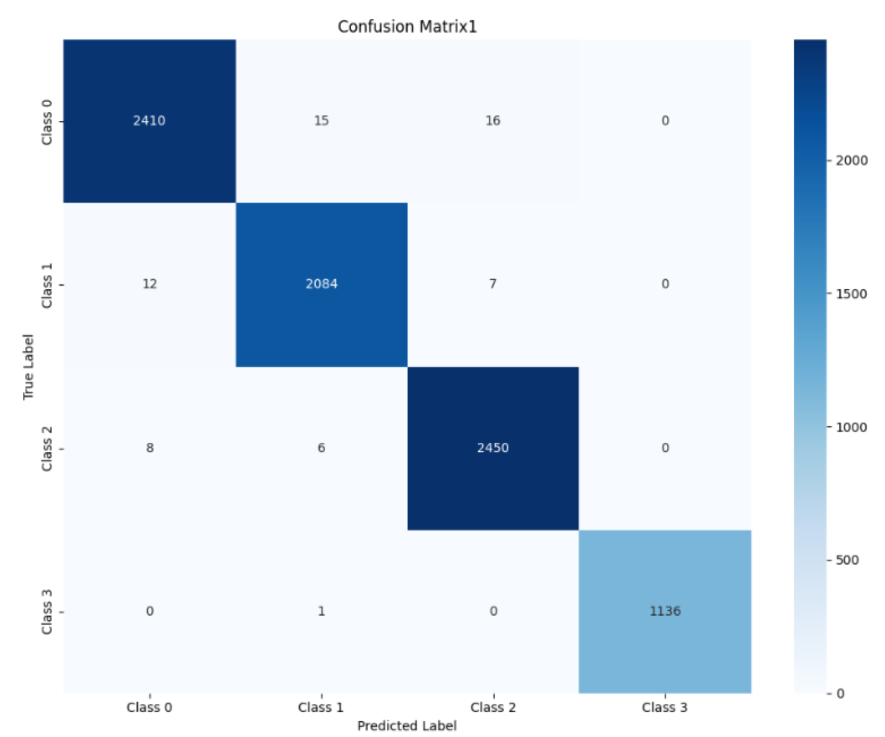

The Problem
Industries across sectors like manufacturing, energy, and transportation rely heavily on rotating machinery such as turbines, pumps, and gearboxes. These machines are prone to faults that often lead to:
- Financial losses (up to $260,000/hour in downtime costs)
- Operational inefficiencies, disrupting production lines and supply chains
- Safety hazards for workers in high-risk environments
Solution
This project introduces an AI-driven predictive maintenance system that leverages vibration-based monitoring to detect potential faults in rotating machinery. Using accelerometers, real-time vibration data is collected and processed to identify fault patterns.
Two advanced machine learning frameworks were developed:
- Artificial Neural Networks (ANN): Extracts key vibration features such as Root Mean Square (RMS) and harmonics to classify faults
- 1D Residual Network (ResNet1D): Utilizes both time- and frequency-domain data for robust fault detection


Scope
The project demonstrates the potential of AI in predictive maintenance with the following objectives:
- Optimize maintenance schedules and reduce costs
- Detect faults early, preventing catastrophic failures
- Automate diagnostics to reduce dependency on manual expertise